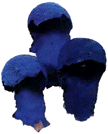
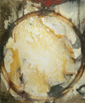
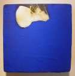
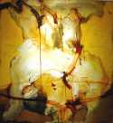

David Geiser
"Geiser searches to capture a rare truth and impart it in his art."
"The initial impression of David Geiser's paintings is their physical appearance,
the palpability of the work.
These pieces reveal their manual construction, the process
that brought them into being... they are tough,
unruly pieces, crafted by hand."





Shows & Collections
2010
- Winter Collection, 2010-2011
- Walk Tall Gallery Oct 9th - Nov 8th 2010
- Fall Paintings, 2010
- Nabi Gallery "Nocturnes", Feb 11-March 20. Reception Thursday Feb 11, 6-8 P.M.
2009
- Sylvester & Co. Opening Reception August 8, 2009
- Corporate Installations - 1300 17th Street Lobby, Aloft Hotel Lobby
- Butters Gallery Ltd, New Paintings for 2009, June 04 - June 27, 2009
- When the Artist Was Underground, by Baylis Greene - East Hampton Star, March 18, 2009
- David Geiser at Ross and Guild Hall - March 2009
2008
- The Brooklyn Rail essay by Robert C. Morgan, March 2008
- Spanierman Gallery LLC, online gallery
- New Work, Spring 2008
- Blue Splash, Jan 5 - Feb 2, 2008
- Kip's Gallery, New York
2007
- Four Artists Exhibition: Sept13 - October 20, 2007 Kip's Gallery, New York
- Butters Gallery, Ltd. - July 2007
- New Paintings, Spring 2007
1969-1979
- Comics 1970-1979 - DTs, Pain, Saloon, Clowns
- Various Illustrations
- Various characters
Galleries
Kip's Gallery
New York City
New York City
Spanierman Gallery LLC
New York City
New York City
Alpan Gallery
Huntington, New York
Huntington, New York
Anita Shapolsky Gallery
New York City
New York City
Kim Foster Gallery
New York City
New York City